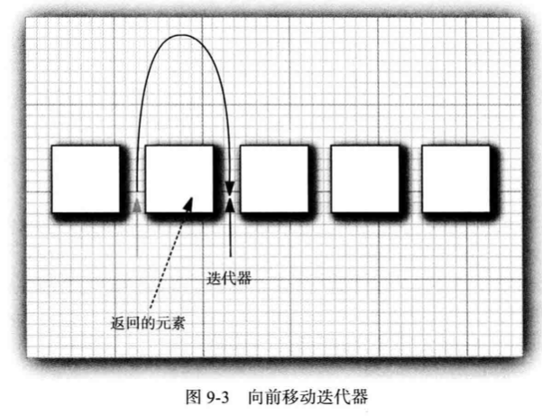
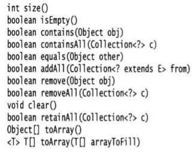
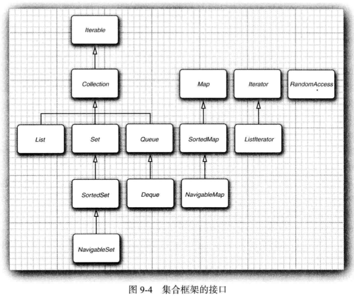
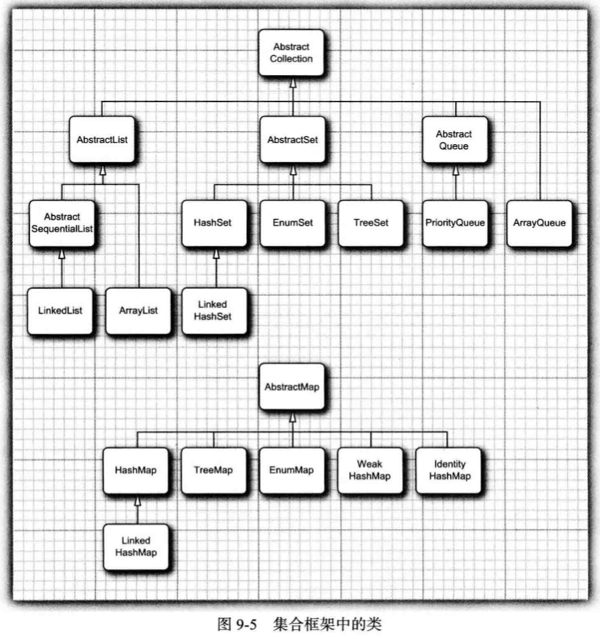
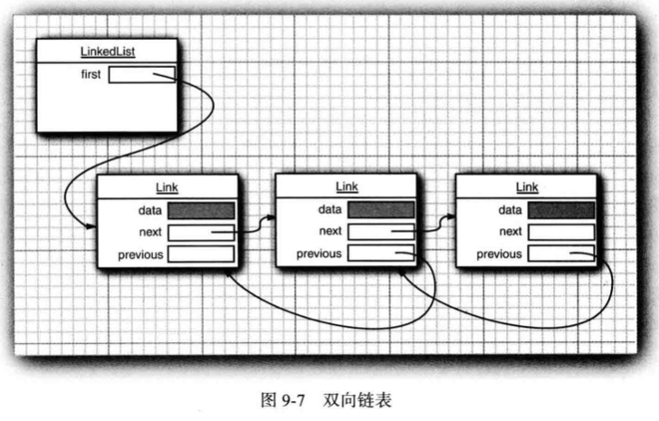
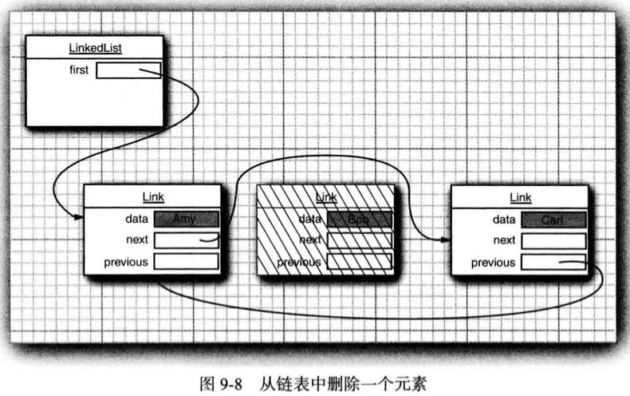
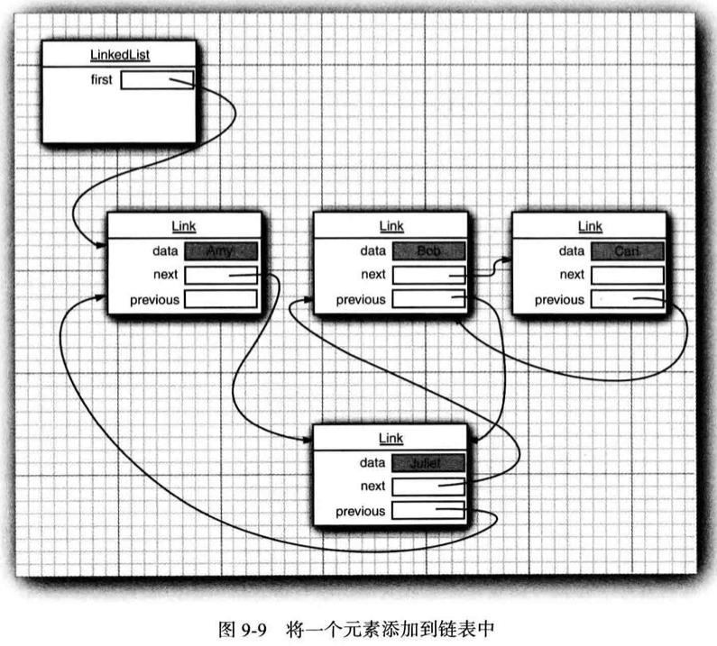

9.1 Java集合框架
9.1.1 将集合的接口与实现分离
Java集合类库将接口与实现分离。
例如队列（queue）。
pubic interface Queue<E>{
void add(E element);
E remove();
int size();
}队列接口指出可以在尾部添加元素，在头部删除元素，并可以查看队列中的元素个数。但是接口并不说明队列是如何实现的，队列有两种实现方式：循环数组和链表。
在程序中使用队列时，一旦构建了集合就不需要知道具体的实现方式，因此可以使用接口类型来存放集合的引用。
Queue<Customer> expressLane = new LinkedListQueue<>();
9.1.2 Collection接口
在Java类库中，集合类的基本接口是Collection接口。
public interface Collection<E>{
boolean add(E element);
Iterator<E> iterator();
}这个接口有两个基本方法，add方法用于向集合添加元素，如果添加元素改变了集合就返回true，如果没有则返回false（比如添加集合中已经存在的对象）。
iterator方法用于返回一个实现了Iterator接口的对象，可以使用这个迭代器对象依次访问集合中的元素。
9.1.3 迭代器
Iterator接口包括4个方法。
public interface Iterator<E>{
E next();
boolean hasNext();
void remove;
default void forEachRemaining(Consumer <? super E> action);
}通过反复调用next方法可以逐个访问集合中的每个元素，如果到达集合末尾将抛出NoSuchElementException，因此在调用next之前需要调用hasNext进行判断，如果还有多个供访问元素，hasNext返回true。
Collection<String> c = ...;
Iterator<String> iter = c.iterator();
while(iter.hasNext()){
String element = iter.next();
do something...
}或者使用for each。
for(String element: c){
do something
}for each循环可以与任何实现了Iterable接口的对象一起工作，这个接口只包含一个抽象方法。
public interface Iterable<E>{
Iterator<E> iterator();
}Collection接口扩展了Iterable接口，因此标准类库中的任何集合都可以使用for each循环。
元素的访问顺序取决于集合类型，如果对于ArrayList进行迭代，迭代器从索引0开始，每迭代一次，索引加一。如果访问HashSet，每个元素会按照某种随机的顺序出现，可以确定遍历所有元素，但是无法预知元素被访问的顺序。
Java迭代器可以被认为位于两个元素之间，调用next时，迭代器越过下一个元素，并返回刚刚越过的那个元素的引用。

对next方法和remove方法的调用具有互相依赖性，如果调用remove之前没有调用next将被视为不合法，抛出IllegalStateException。
it.remove();
it.next();
it.remove();9.1.4 泛型实用方法
事实上Collection接口声明了很多有用的方法，所有的实现类都必须提供这些方法。

如果实现Collection接口的每一个类都要提供这么多的方法是很烦人的，所以Java类库提供了一个AbstractCollection，它将基础方法size和iterator抽象化，并在此提供了例行方法，实现更为容易。
9.1.5 集合框架中的接口

集合有两个基本接口：Collection和Map。
- 对于Collection，插入元素使用
boolean add(E element)，对于Map，插入元素使用V put(K key, V value)； - 对于Collection，读取元素使用迭代器，对于Map，读取元素使用
V get(K key)。
List是一个有序集合，元素会增加到容器中的特定位置，可以使用迭代器访问元素（顺序访问），也可以使用整数索引访问（随机访问）。ListIterator接口是Iterator的一个子接口，定义了一个可以用于在迭代器当前位置前增加元素的add方法（中间插入元素）。
Set接口等同于Collection接口，但是其方法的行为定义更严谨。set的add方法不允许增加重复元素。
SortedSet和SortedMap接口会提供用于排序的比较器对象，这两个接口定义了可以得到集合子集视图的方法。
Java SE 6引入了接口NavigableSet和NavigableMap，其中包含一些用于搜索和遍历有续集和映射的方法。TreeSet和TreeMap类实现了这些接口。
9.2 具体的集合


9.2.1 链表
数组和数组列表的重大缺陷在于，从中间位置删除一个元素要付出很大代机，因为被删除元素后面的元素都要向前移动，中间插入元素也存在这个问题。
链表（linked list）将每个对象存放在独立的节点中，每个节点还存放着序列中下一个结点的引用。Java中的链表是双向链接的，即每个结点还存放着指向前驱结点的引用。


从链表中删除一个元素需要更新被删除元素附近的链接即可。

List<String> staff = new LinkedList<>(); // Linkedlist implements List
staff.add("Amy");
staff.add("Bob");
staff.add("Carl");
Iterator iter = staff.iterator();
String first = iter.next(); // visit first element
String second = iter.next(); // visit second element
iter.remove(); // remove last visited element链表与泛型集合之间的重要区别在于，链表是一个有序集合（ordered collection），每个对象的位置十分重要。LinkedList.add方法直接将对象添加到链表的尾部，如果要添加到链表中间，需要描述集合中位置的迭代器的add方法。
只有对自然有序集合使用迭代器添加元素才有意义，例如set这样的集合其中元素是无序的，因此Iterator接口没有add方法，而它的子接口ListIterator提供了add方法。
interface ListIterator<E> extends Iterator<E>{
void add(E element);
...
}这个add方法与Collection.add不同，它不返回boolean，因为它的操作总会改变链表。
ListIterator还有两个方法用来反向遍历链表：E previous()，boolean hasPrevious()。
与next方法一样，previous方法返回越过的对象。
List<String> staff = new LinkedList<>();
staff.add("Amy");
staff.add("Bob");
staff.add("Carl");
ListIterator<String> iter = staff.listIterator();
iter.next(); // skip past first element
iter.add("Juliet");
如果多次调用add方法，将按照提供的次序依次添加到迭代器当前位置之前。如果链表有n个元素，则有n+1个位置可以插入新元素（包括添加新表头和新表尾）。
set方法可以用一个新元素取代next或previous方法返回的上一个元素。
ListIterator<String> iter = list.listIterator();
String oldValue = iter.next; // return first element
iter.set(newValue); // set first element to newValue如果两个迭代器同时进行遍历，其中一个迭代器修改了元素，就会发生混乱，抛出ConcurrentModificationException异常。
为了避免发生并发修改的异常，要遵循以下规则：可以根据需要给容器附加许多的迭代器，但是这些迭代器只允许读取列表。另外，再单独附加一个既能读又能写的迭代器。
使用链表的目的在于尽可能减少在列表中间插入或删除元素所付出的代价，如果需要对集合进行随机访问，就是用数组或ArrayList。
9.2.2 数组列表
在上一节中介绍的是List接口和实现了这个接口的LinkedList类，List接口用于描述一个有序集合，并且集合中每个元素的位置很重要。有两种访问元素的协议：一种用迭代器，另一种用get和set方法随机访问。后者不适用于链表，但对数组很有用。ArrayList类也实现了List接口，封装了一个动态再分配的对象数组。
9.2.3 散列集
链表和数组按照人们的意愿排列元素次序，想要查看某个指定元素却忘记位置则需要访问所有元素直到找到为止。如果集合中包含的元素很多，将会很消耗时间。
散列表（hash table）可以快速查找所需要对象，缺点是无法控制元素出现的次序。hash table为每个对象计算一个整数，称为散列码（hash code），散列码是由对象的实例域产生的一个整数，具有不同数据域的对象产生不同的散列码。
Java中每个hash table用链表数组实现，每个列表称为桶（bucket），查找表中对象的位置就要先计算它的散列码，然后与桶的总数取余，得到的结果就是保存这个元素的桶的索引。比如某个对象散列码为76268，有128个桶，对象就保存在108号桶中。如果这个桶中没有其他元素，此时将元素直接插入到桶中，如果桶被占满，则出现散列冲突（hash collision）。这是需要将新对象与桶内所有对象比较，查看是否存在该对象。
想要更多控制散列表的运行性能，需要指定一个初始的桶数（用于收集具有相同散列值的桶的数目），通常将桶数设置为预计元素个数的75%～150%。
如果散列表太满，需要再散列（rehashed），需要创建一个桶数更多的表，并将所有元素插入到这个新表，丢弃原来的表。装填因子（load factor）决定何时对散列表进行再散列。例如装填因子为0.75（默认值），表中超过75%的位置已经填入元素，就会用双倍的桶数自动进行再散列。
hash table可以用来实现几个重要的数据结构，比如set。set是没有重复元素的集合，set的add方法首先集中查找要添加的对象，如果不存在再添加这个对象。
Java集合类库提供HashSet类，实现了基于hash table的set。add方法添加元素，contains方法查看某个元素是否在set中。
HashSet迭代器依次访问所有桶，由于散列将元素分散在表的各个位置上，访问顺序几乎是随机的。不关心集合中元素顺序时可以使用HashSet。
9.2.4 树集
TreeSet与HashSet十分类似，但是它是一个有序集合（sorted collection），可以以任意顺序将元素插入到集合中，在对集合进行遍历时，每个值将自动按照排序后的顺序呈现。
TreeSet排序是用树结构完成的，迭代器总是以排好序的顺序访问每个元素。
将一个元素添加到TreeSet中比添加到HashTable中慢，但是比数组和链表快。
9.2.5 队列与双端队列
队列可以有效地在尾部添加元素，在头部删除元素（先进先出）。有两个端头的队列即双端队列，可以有效地在头部和尾部同时添加或删除元素，但不支持在队列中间添加元素。
9.2.6 优先级队列
优先级队列（priority queue）中的元素可以按照任意顺序插入，但是总是按照排序的顺序进行检索。优先级队列使用堆（heap）。堆是一个可以自我调整的二叉树，对树执行add和remore操作，可以让最小的元素移动到根，不必对元素进行排序。
使用优先级队列的典型是任务调度，每一个任务有有一个优先级，任务可以随机添加到队列中，每当启动一个新任务，都将优先级最高的任务从队列中删除（最小的元素）。
9.3 映射
映射（map）存放键值对，提供key就能找到value。
9.3.1 基本映射操作
Java类库提供map的两个通用实现：HashMap和TreeMap，这两个类都实现了Map接口。
HashMap对key进行hash，TreeMap用key的整体顺序对元素进行排序，并将其组织成搜索树。Hash或比较函数只能用于key，而不能用于value。
HashMap更快，如果不需要按照顺序访问key，就使用HashMap。
Map<String, Employee> staff = new HashMap<>();
Employee harry = new Employee("Harry Hacker");
staff.put("987-98-9996", harry);检索对象使用的是key。
String id = "987-98-9996";
e = staff.get(id);如果map中没有对应的kay/value对，get将返回null。
可以设定一个代替null的默认值：int score = scores.getOrDefault(id, 0);，如果id不存在则返回0。
key必须是唯一的，不可能同时存在两个相同的key。
remove方法删除给定key的元素，size返回元素个数。
9.3.2 更新映射项
一般情况下，可以得到一个与key关联的value，更新后放回新值。不过key第一次出现则不能使用这种方法。
比如统计单词出现的次数，看到word计数器加1：counts.put(word, counts.get(word)+1);，如果word第一次出现，get返回null，将出现NullPointerException异常。
可以使用getOrDefault方法补救：counts.put(word, counts.getOrDefault(word, 0)+1);。
或者首先调用putIfAbsent方法，只有当key原先存在时才会放入一个值：counts.putIfAbsent(word, 0);，然后再进行更新。
merge方法可以简化这个操作：counts.merge(word, 1, Integer::sum);，把word与1关联，否则将原值加1。
9.3.3 映射视图
集合框架不认为map本身是一个集合。不过可以得到map的视图（view）——实现了Collection接口或某个子接口的对象。
有三种视图：键集，值集（不是一个set，因为可能存在相同的value），以及键值对集。
Set<K> keySet()
Collection<V> values()
Set<Map.Entry<K, V>> entrySet()这三个方法会分别返回这三个视图。其中keySet不是HashSet或TreeSet，而是实现了Set接口的另外某个类的对象。Set接口扩展了Collection接口，可以像使用set一样使用keySet。
Set<String> keys = map.keySet();
for(String key: keys){
do something with key
}也可以同时查看key和value。
for(Map.Entry<String, Employee> entry: staff.entrySet()){
String k = entry.getKey();
Employee v = entry.getValue();
do something with k, v
}如果在键集视图上调用迭代器的remove方法，会从map中删除这个key与它对应的value。但是不能对键集视图使用add方法。
9.3.4 弱散列映射
WeakHashMap为了解决一个值对应的键已经不再被使用的问题。假定某个键的最后一次引用已经消亡，不再有任何途径引用这个值的对象，由于在程序中的任何部分都没有再出现这个键，这个键值对就无法删除。
垃圾回收器也不能删除它，因为垃圾回收器跟踪活动的对象，只要映射对象是活动的，其中的所有桶也是活动的，它们不能被回收。
WeakHashMap可以完成这项工作，当对键的唯一引用来自散列条目时，它将与垃圾回收器协同工作一起删除键值对。
9.3.5 链接散列集与映射
LinkedHashSet和LinkedHashMap类用来记住插入元素项的顺序，可以避免在列表中的项从表面上看是随机排列的。

9.3.6 枚举集与映射
EnumSet是一个枚举类型元素集的高效实现，枚举类型的实例是有限的，所以EnumSet内部用位序列实现，如果对应的值在集中，相应的位置被置为1。
EnumMap是一个键类型为枚举类型的映射，可以直接高效地用一个值数组实现。
9.3.7 标识散列映射
IdentityHashMap类中键的散列值不是用hashCode方法计算的，而是用System.identityHashCode方法计算，这是Object.hashCode方法根据对象的内存地址来计算hash code时使用的方式。对两个对象进行比较时，IdentityHashMap类使用==，而不是equals。
也就是说不同的键对象即使内容相同也被视为不同对象。在实现对象遍历算法时这个类很有用，可以用来跟踪每个对象的遍历状况。
9.4 视图与包装器
### 9.4.1 轻量级集合包装器
Arrays类的静态方法asList将返回一个包装了普通Java数组的List包装器。这个方法可以将数组传递给一个期望得到列表或集合参数的方法。
Card[] cardDeck = new Card[52];
...
List<Card> cardList = Arrays.asList(cardDeck);返回的对象不是ArrayList，而是一个视图对象，带有访问底层数组的get和set方法。
9.4.2 子范围
可以为很多集合建立子范围（subrange）视图。
List group2 = staff.subList(10,20);
返回10～19号元素。
9.4.3 不可修改的视图
不可修改视图（unmodifiable views）对现有集合增加一个运行时检查，如果发现试图修改集合，就会抛出异常。Collections提供了8种方法来获得不可修改视图。
9.4.4 同步视图
如果多个线程访问集合，就要确保集不会被意外破坏。视图机制可以确保常规集合的线程安全，例如Collections的静态方法synchronizedMap方法可以将任何一个map转换成具有同步访问方法的map。
9.4.5 受查视图
受查视图用来对泛型类型发生问题时提供调试支持，例如Collections的静态方法checkedList可以定义一个安全列表，使用add方法时将检测插入对象是否属于给定类。
9.5 算法
泛型集合接口的一大优点在于，算法只需要实现一次。
9.5.1 排序与混排
Collections的sort方法实现了对List接口的集合进行排序。
List<String> staff = new Linkedlist<>();
Collections.sort(staff);这个方法假定列表元素实现了Comparable接口。如果想采用其他方式进行排序，可以使用List接口的sort方法并传入一个Comparator对象，比如按工资排序：
staff.sort(Comparator.comparingDouble(Employee::getSalary));
如果降序排列：
staff.sort(Comparator.reverseOrder())
如果按照工资降序排列：
staff.sort(Comparator.comparingDouble(Employee::getSalary).reversed())
9.5.2 二分查找
对于排序好的集合，使用binarySearch方法可以实现二分查找。要查找某个元素，需要提供集合（这个集合要实现List接口）以及要查找的元素。如果集合没有采用Comparable接口的compareTo方法排序还需要提供一个Comparator对象。
i = Collections.binarySearch(c, element);
i = Collections.binarySearch(c, element, comparator);如果返回负值，代表没有匹配元素。
9.5.3 简单算法
Collections类中还包含了几个简单实用的算法，比如列表的复制，一个常量值填充容器，逆置一个列表的元素顺序。
9.5.4 批操作
从coll1中删除coll2中出现的所有元素：coll1.removeAll(coll2);。
从coll1中删除未在coll2中出现的所有元素：coll1.retainAll(coll2);。
9.5.5 集合与数组的转换
数组转换为集合：Arrays.asList包装器。
String[] values = ...;
HashSet<String> staff = new HashSet<>(Arrays.asList(values));集合转换为数组可以使用toArray方法，但是得到的是一个Object[]数组，不能使用强制类型转换。
Object[] values = staff.toArray();
String[] values = (String[]) staff.toArray(); // Error!应该使用一个变化的形式，提供一个所需类型且长度为0的数组。
String[] values = staff.toArray(new String[0]);
9.5.6 编写自己的算法
如果编写自己的算法，尽可能使用接口。
9.6 遗留的集合

9.6.1 Hashtable类
Hashtable类与HashMap类的作用一样，拥有相同的接口。与Vector类一样，Hashtable的方法也是同步的。
如果对同步性或遗留代码的兼容性没有任何要求，就应该使用HashMap，如果需要并发访问，则需要使用ConcurrentHashMap。
9.6.2 枚举
Enumeration接口可以对元素序列进行遍历，它有两个方法：hashMoreElements和nextElements。与Iterator接口的hasNext方法和next方法十分类似。
9.6.3 属性映射
property map是一个类型非常特殊的映射结构，它的特性有：
- key和value都是字符串。
- 表可以保存在一个文件中，从文件中加载。
- 使用一个默认的辅助表。
实现属性映射的是Properties类，通常用于程序的特殊配置选项。
9.6.4 栈
Stack类有push和pop方法，扩展为Vector类，可以使用不属于栈操作的insert和remove方法，即可以在任意位置插入或删除。
9.6.5 位集
BitSet类用于存放一个位序列，如果需要高效储存序列可以使用位集。
最后更新： 2021年07月15日 03:43